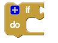
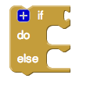
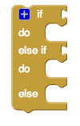
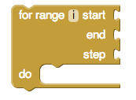
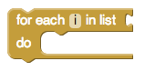
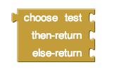
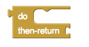
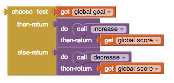
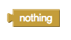

Control Blocks
- if & if else
- for range
- for each
- get
- while
- choose
- do then return
- evaluate
- nothing
- open another screen
- open another screen with start value
- get start value
- close screen
- close screen with value
- close application
- get plain start text
- close screen with plain text
if & if else

Tests a given condition. If the condition is true, performs the actions in a given sequence of blocks; otherwise, the blocks are ignored.

Tests a given condition. If the result is true, performs the actions in the -do sequence of blocks; otherwise, performs the actions in the -else sequence of blocks.

Tests a given condition. If the result is true, performs the actions in the -do sequence of blocks; otherwise tests the statement in the -else if section. If the result is true, performs the actions in the -do sequence of blocks; otherwise, performs the actions in the -else sequence of blocks.
The gif below shows how to use the if else mutator block.
for range i

Runs the blocks in the do section for each numeric value in the range from start to end, increasing the value for i by step each time. Use the given variable name, i to refer to the current value.
for each i in list

Runs the blocks in the do section for each item in the list. Use the given variable name, i to refer to the current list item.
get
Returns the value currently stored in the variable you select by using the dropdown. You want to use this block to access the variable i used in for range and for each.
This block acts the same as the get blocks found in Procedures and Variables. Any get block will act with the same functionality.
while

Tests the -test condition. If true, performs the action given in -do , then tests again. When test is false, the block ends and the action given in -do is no longer performed.
choose

Tests a given condition. If -test is true, performs the actions in the then-return sequence of blocks and returns the then-return value; otherwise, performs the actions in the else-return sequence of blocks and returns the else-return value.
do then return

Sometimes in a procedure or another block of code, you may need to do something and return something, but for various reasons you may choose to use this block instead of creating a new procedure.
This block acts the same way as the do then return found in Procedures.
Maybe you want to use the choose block and want to do something before you return

evaluate
Provides a "dummy socket" for fitting a block that has a plug on its left into a place where there is no socket, such as one of the sequence of blocks in the do part of a procedure or an if block. The block you fit in will be run, but its returned result will be ignored. This can be useful if you define a procedure that returns a result, but want to call it in a context that does not accept a result.
nothing

Returns nothing. Or you may also want to use it in the case where you have a block that needs to return something but you don't care about what value is returned: nothing can be plugged in to the return socket.
In some computer programming languages, we call this None.
open another screen

Opens the screen with the provided name.
open another screen with start value

Opens another screen and passes a value to it.
get start value

Returns the start value given to the current screen.
This value is given from using open another screen with start value or close screen with value.
close screen

Closes the current screen.
close screen with value

Closes the current screen and returns a value to the screen that opened this one
close application

Closes the application.
get plain start text

Returns the plain text that was passed to this screen when it was started by another app. If no value was passed, it returns the empty text. For multiple screen apps, use get start value rather than get plain start text
close screen with plain text

Closes the current screen and passes text to the app that opened this one. For multiple screen apps, use close screen with value rather than this one.